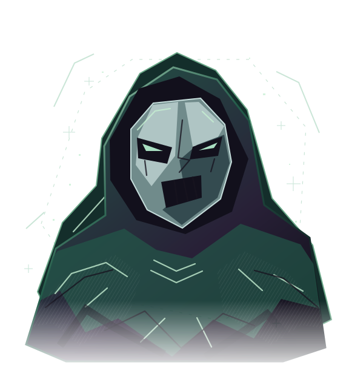
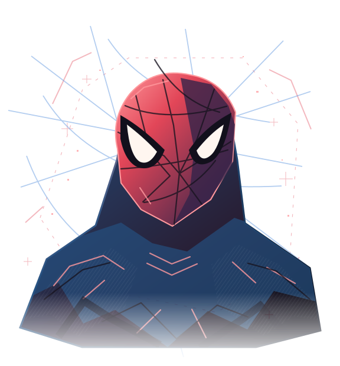
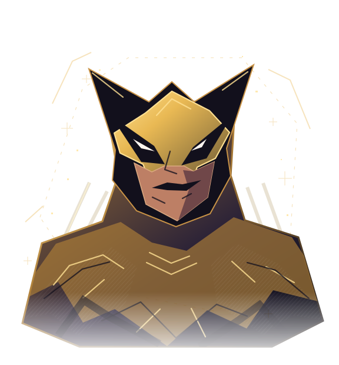
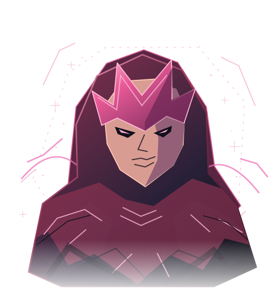
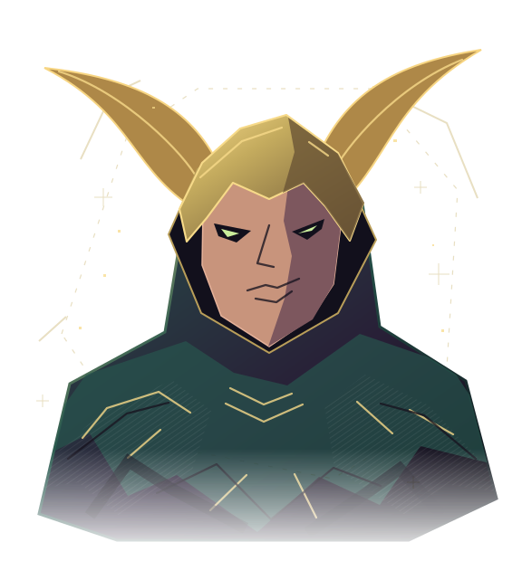

Deadpool
Tentara bayaran dengan kemampuan regenerasi yang selalu sempat melontarkan lelucon, bahkan saat peluang menangnya tipis.
Kemampuan andalan
- Regenerasi
- Katana kembar
- Taktik tak terduga

Delapan legenda dari multisemesta Marvel. Siapa yang kamu bawa ke arena?
Tentara bayaran dengan kemampuan regenerasi yang selalu sempat melontarkan lelucon, bahkan saat peluang menangnya tipis.
Penguasa Latveria yang memadukan kecerdasan, zirah, dan sihir kuno. Setiap langkahnya bagian dari rencana yang lebih besar.

Pelindung New York yang bergerak lincah dengan jaring, mengandalkan akal dan indra laba-laba untuk membaca bahaya.

Penemu yang mengandalkan zirah buatannya untuk menguasai udara dan berimprovisasi saat rencana berubah.

Petarung veteran dengan cakar adamantium dan tubuh yang pulih cepat, bahkan setelah pertarungan yang berat.

Penyihir yang menguasai sihir kekacauan dan mampu membengkokkan realitas sesuai kehendaknya.

Utusan Khonshu yang berpatroli di malam hari dengan pisau bulan sabit dan pengalaman bertarung jarak dekat.

Dewa tipu daya yang memakai ilusi dan tipu muslihat untuk membuat lawan meragukan apa yang mereka lihat.

08 petarung Pilih karakter
Kenali delapan pahlawan, penjahat, dan antihero dengan ilustrasi dan palet warna masing-masing.
Ketuk kartu atau gunakan tombol panah saat fokus ada di daftar karakter untuk mengganti petarung dan tema arena.
Buka profil tiap karakter untuk melihat nama alias, kategori, dan tiga kemampuan andalannya.